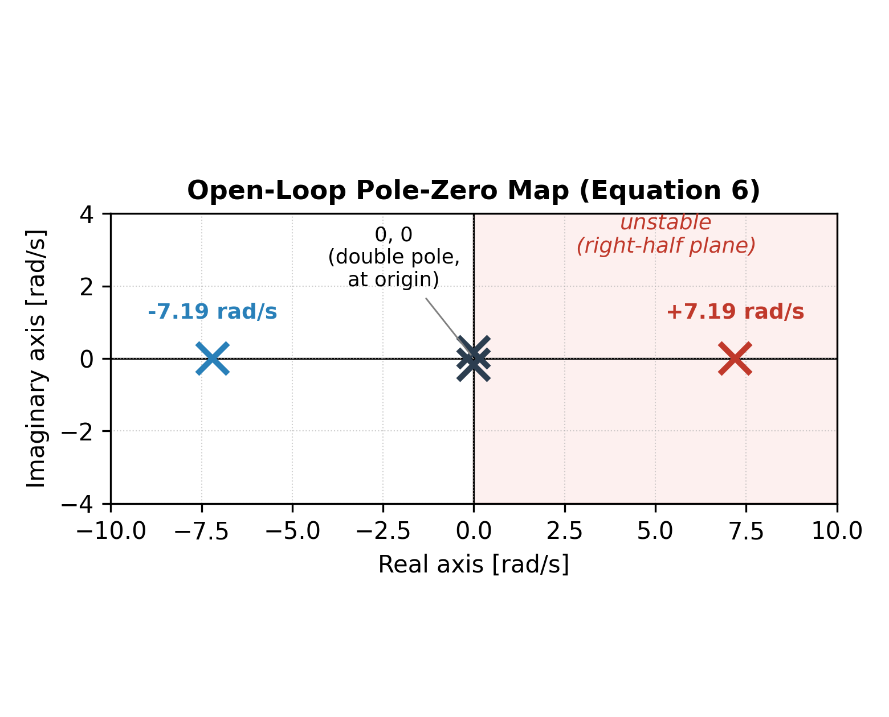
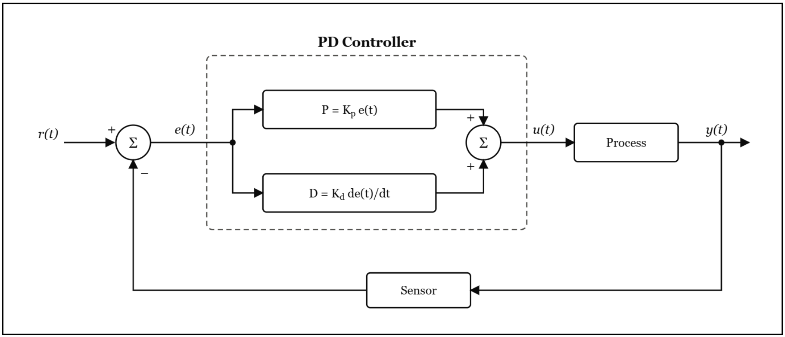
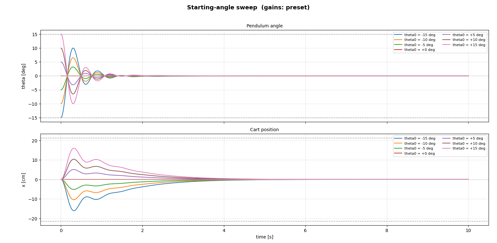
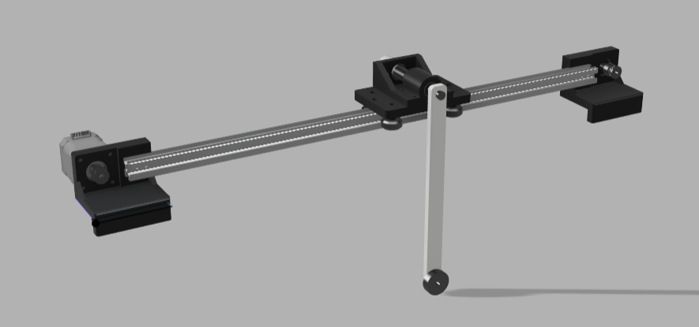
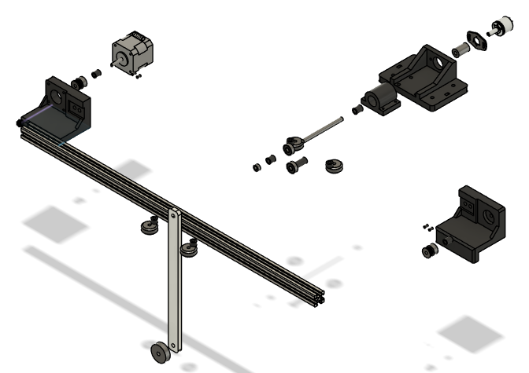
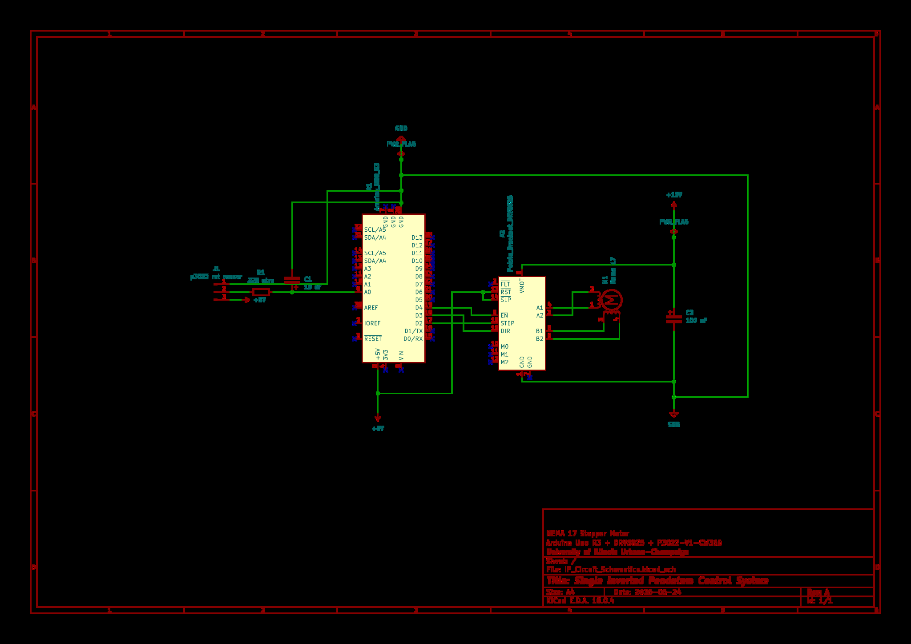
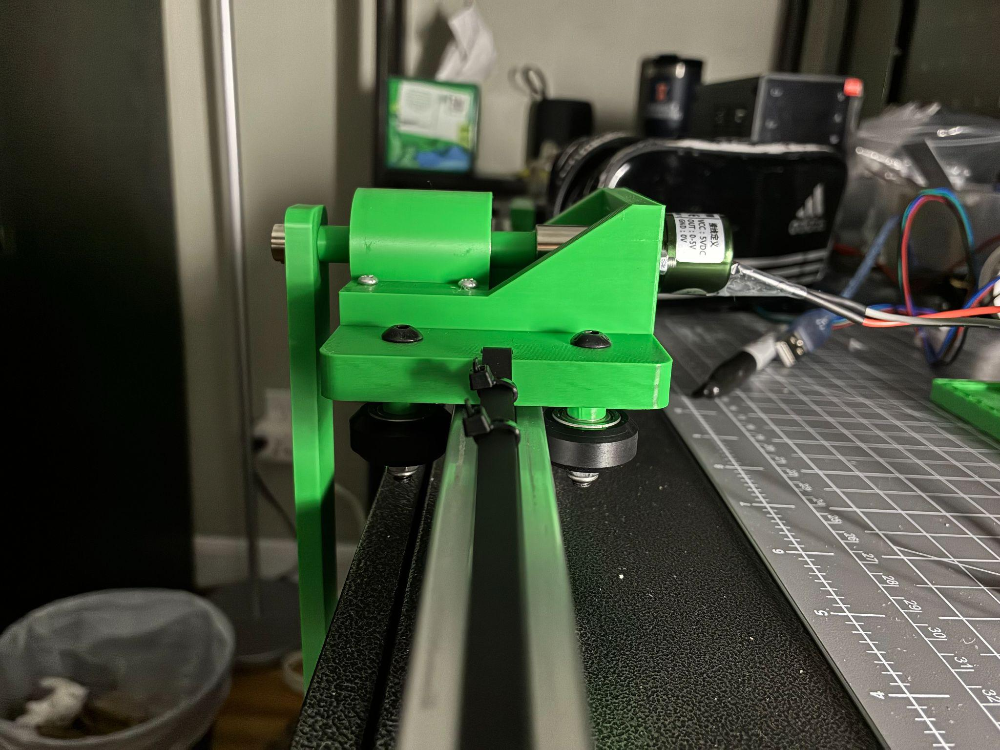
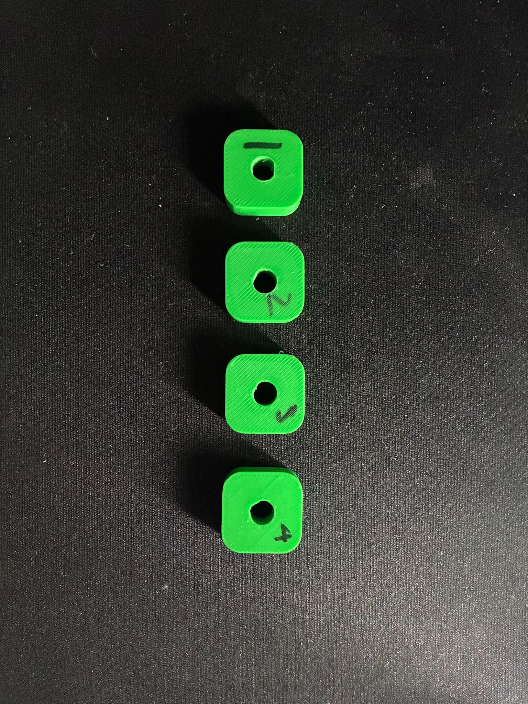
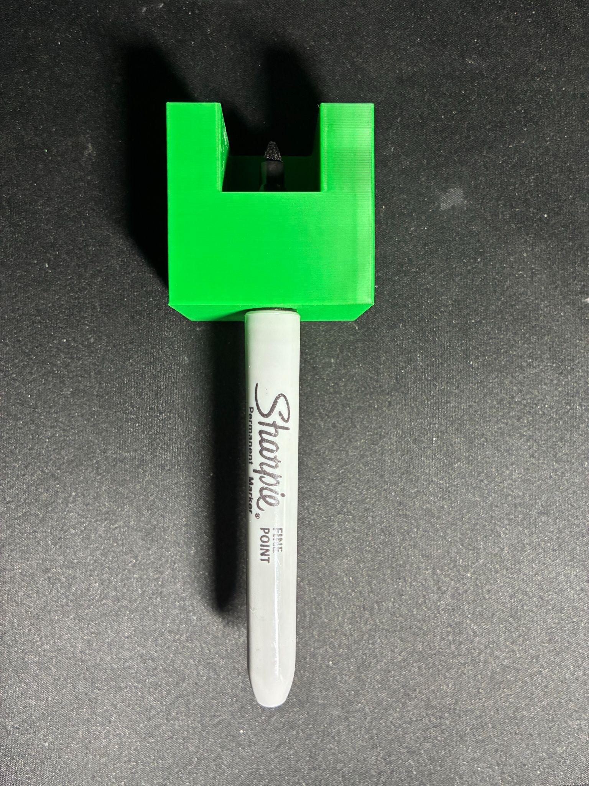

Single Inverted Pendulum
A cart-pole rig that balances a rod upright by sliding a belt-driven cart beneath it. A solo, end-to-end control-systems build: I derived the dynamics, tuned the controller in simulation, then ran it in real time on 3D-printed hardware.
The full stack: Lagrangian modeling, PD control design, a Python simulation, Fusion 360 CAD and 3D printing, KiCad electronics, and a 200 Hz Arduino loop.
My role: Solo project. I derived the equations of motion, designed and tuned the PD controller in a Python simulation, modeled the CAD and 3D-printed the rig, wired the electronics in KiCad, and wrote the real-time Arduino controller.
Balancing an unstable plant · cart-pole
Solo buildThe problem: an inverted pendulum is open-loop unstable, it falls the instant it leaves vertical. The actuator only moves the cart, never the rod directly. Balancing means sliding the cart under the falling rod fast enough to keep it upright, while also keeping the cart from running off its 0.54 m rail.
System modeling
I modeled the cart-pole as a nonlinear, coupled system using Lagrange's method, treating the rod as a distributed mass rather than a point mass at the tip. Linearizing about the upright equilibrium with the small-angle approximation collapses the dynamics into a clean state-space form.
with A = M + m1 + m2, B = l(m1 + m2/2), C = l2(m1 + m2/3), Δ = AC − B2. The open-loop poles work out to {0, 0, +7.19, −7.19} rad/s.
That single right-half-plane pole at +7.19 rad/s is the whole challenge: it confirms the plant is unstable and has to be actively stabilized.

Control design
Two PD loops run on one actuator command. The angle loop drives the rod to upright and takes priority; a deliberately weaker position loop gently pulls the cart back to center so it never runs out of rail.
Angle loop (upright) summed with position loop (re-center) into a single cart force.
I set the angle gains from a damped second-order target (a chosen natural frequency and damping ratio) instead of pure trial and error, then refined them in simulation. The derivative term in each loop is low-pass filtered (τd = 0.02 s, about an 8 Hz cutoff) so sensor noise is not amplified by differentiation.

Simulation
Before touching hardware I built a Python simulation of the nonlinear plant and controller (SciPy solve_ivp at a 5 ms step, the same rate as the rig). Sweeping the starting angle from −15° to +15°, every case recovers to upright with no rail contact and re-centers within 3 to 4 s.

From simulation to hardware
On the rig the same PD law runs at a fixed 200 Hz. The one genuine difference from simulation: the sim commands a force, but the stepper takes a velocity, so that force is integrated into a commanded velocity and converted to STEP/DIR pulses. Because of that, the hardware gains were re-tuned on the bench from small values, using the simulation gains only as a reference.
Mechanical design
The rig was designed in Fusion 360 and built from 3D-printed PLA custom parts (platform, bearing slider and housing, pendulum stick, T-slot holders, spacers) plus off-the-shelf bearings, a D-shaft, and a NEMA 17 stepper. The cart rides a 0.54 m T-slot rail on a GT2 belt and pulley, and the pendulum pivots in a single vertical plane.


Electronics
An Arduino Uno reads the P3022 rotary angle sensor and drives the stepper through a DRV8825. Logic runs on USB 5 V while the motor draws from a separate 12 to 24 V supply. An RC filter (220 Ω, 10 µF, about a 72 Hz cutoff) cleans the sensor line, and a 100 µF capacitor smooths the motor supply against inductive spikes.

Mechanical challenges
Most of the difficulty was alignment and repeatability, not the parts. Because cart position is dead-reckoned from the stepper step count, any belt slack or missed step corrupts the estimate directly, so belt and bearing fit mattered as much as gain tuning. Several print iterations dialed in the PLA tolerances around the bearings and D-shaft, and printed drill guides kept hole placement repeatable.



Results
- Settles to within ±0.5° of upright in ≈0.7 s and re-centers to within ±1 cm in ≈1.4 s.
- Recovers from starting tilts of ±7° on hardware (±15° in simulation); the gap traces to the 10-bit ADC resolution, the velocity-command stepper versus a continuous force, and unmodeled belt and bearing friction.
- Runs a fixed 200 Hz control loop with the cart force held inside ±60 N throughout.
- Overshoot and cart excursion match simulation (60 to 65% of the start angle, 2.5 to 4.7 cm), staying well inside the rail's ±21.4 cm half-travel.